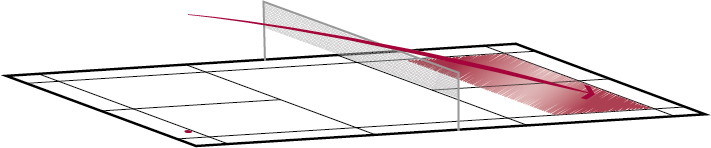

Badminton – Schlagtechnik
Smash Vorhand
Der Smash Vorhand setzt die Gegnerin stark unter Druck und führt idealerweise direkt zum Punktgewinn.
Bemerkung: Weitere Perspektiven stehen in der Playlist zur Verfügung (Menu oben links).
Wohin fliegt der Shuttle?
Der Smash fliegt vom Mittel- oder Hinterfeld schnell nach unten ins gegnerische Mittel- oder Hinterfeld nach unten.
Wann wird der Schlag gebraucht?
Wenn die Spielerin den Shuttle im Mittel- oder Hinterfeld hart nach unten spielen möchte.
Welches sind die wichtigsten Merkmale des Schlags?
Ausgangsposition
- Vorhandgriff.
- Beide Ellbogen und Schultern liegen auf einer Geraden.
- Unterarm weder pro- noch supiniert.
- Racket zeigt zum heranfliegenden Shuttle.
- Hüfte und Schulter geöffnet. Ellbogen zurückgeführt.
Ausholphase
- Schnellkräftiges Vorbringen der Hüfte.
- Schnellkräftiges Heben und Vorbringen des Ellbogens mit gleichzeitiger Supination von Unter- und Oberarm (Schlagfläche bewegt sich weg vom Treffpunkt).
Schlagphase
- Sehr schnellkräftige Pronation des Ober- und Unterarms.
- Ellbogen nicht ganz durchstrecken.
- Oberkörper leicht nach vorne neigen.
- Treffpunkt möglichst in der Körperlängsachse («über Kopf oder Schulter»).
Ausschwungphase
- Schlagfläche nach unten ausschwingen (Unterarm rotiert weiter).
- Ellbogen nach unten und zum Körper nehmen.
Variation
Dank dem höheren Treffpunkt wird der Sprungsmash noch steiler gespielt.
Quelle: Richard, Th. et al. (2016). Badminton: Lauf- und Schlagtechnik. Magglingen: Bundesamt für Sport BASPO.
Quelle: Mobilesport.ch - Badminton Lauf und Schlagtechnik
- Badminton - Schlagtechnik
- Clear Vorhand
- Smash Vorhand
- Drop Vorhand
- Drop Vorhand gezogen
- Drop Rückhand gezogen
- Clear Rückhand
- Drop Vorhand diagonal geschnitten aus Vorhandecke
- Drop Vorhand gerade geschnitten aus Rückhandecke
- Drop Vorhand diagonal geschnitten aus Rückhandecke
- Drop Vorhand gerade geschnitten aus Vorhandecke
- Stick-Smash Vorhand